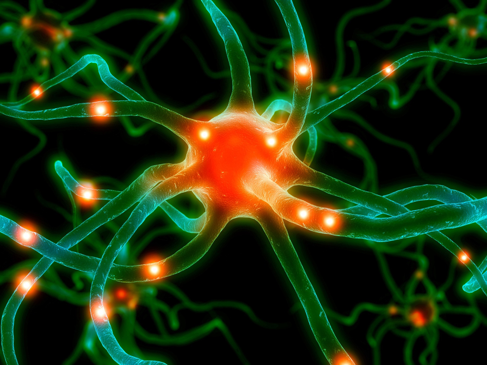

A New Drug For Cerebral Palsy
Kelly Quinn
Fall 2011

Recent discoveries show that there may be hope for children with
cerebral palsy. Neuroscientists Stephen Fancy et al from UCSF recently
published an article in Nature identifying the genes and proteins
responsible for controlling the repair of white matter injury
associated with cerebral palsy. Damaged white matter characteristic of
cerebral palsy leads to impairment in movement, learning, hearing,
seeing, or thinking. Symptoms develop during infancy and the disease
continues to affect individuals for the rest of their lives. At this
point in time, cerebral palsy has no treatment or cure.
At the heart of cerebral palsy is damage
to myelin sheaths. White matter in healthy brains contains axons, long
processes that extend from nerve cells and connect them to each other.
These axons are wrapped in myelin sheaths, or layers of specific brain
cells called oligodendrocytes. Oligodendrocytes contain the myelin that
wraps around the axons. Axons transmit signals in the brain, while
myelin sheaths protect the axons and increase the speed of the
transmission.
What happens when axons are unmyelinated,
as is this case in people with cerebral palsy? Unmyelinated axons
affect the ability of the brain to transmit signals as efficiently as
normal myelinated nerve cells. Poorly transmitted signals translate to
an impaired nervous system. Unfortunately, our bodies are not very
efficient at repairing myelin sheaths around unmyelinated axons.
However, Axin inhibition protein 2 (Axin2) has been shown to increase
remyelination. Under certain conditions, unmyelinated axons can be
repaired potentially helping people with cerebral palsy.
David Rowitch and Stephen Fancy, authors
of Axin2 as Regulatory and Therapeutic Target in Newborn Brain Injury
and Remyelination, examined the brains of newborn infants who had died
due to lack of oxygen. Premature babies are at high risk for being
deprived of oxygen because their lungs are usually not fully developed.
These babies often exhibit damage to axons or myelin sheaths. The
resulting death of neurons in different areas of the brain may
potentially lead to impaired intellectual disability or cerebral palsy.
Rowitch and Fancy noticed that Axin2 was found in the brains of newborn
infants with white matter injury. Interestingly, Axin2 has previously
been found in adults that have multiple sclerosis, another disease
caused by unmyelinated axons. This striking correlation suggests that
Axin2 plays a role in the remyelination of damaged nerve cells.
Axin2 is present in immature
oligodendrocyte progenitor cells (OLP), the cells that develop into the
mature oligodendrocytes that form myelin sheaths. However, Axin2 is not
found in the mature cells. Thus, myelination occurs primarily in brains
undergoing early development or regions of the brain undergoing
remyelination. Axin2 is necessary for cells to develop, but is
unnecessary for cellular function in mature oligodendrocytes. In the
case of white matter injury and multiple sclerosis, it is believed that
the oligodendrocytes are stuck in an early developmental stage due to
the presence of low levels of Axin2.